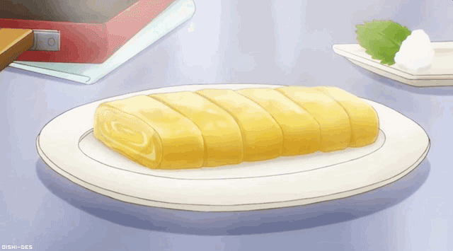

Tamagoyaki

Description
It's easy to make authentic Japanese food at home with this classic Japanese omelette recipe.
Tamagoyaki is slightly sweet and seasoned with soy sauce, mirin, and dashi stock.
It's a favorite in bento boxes and also makes an easy Japanese appetizer.
Serve with shredded daikon and soy sauce for dipping.
Ingredients
- 4 eggs
- 4 tablespoons prepared dashi stock
- 1 tablespoon white sugar
- 1 teaspoon mirin (Japanese sweet wine)
- ½ teaspoon soy sauce
- ½ tablespoon vegetable oil
Steps
- Whisk eggs, dashi stock, sugar, mirin, and soy sauce together in a bowl.
- Heat 1/3 of the oil in a large nonstick skillet over medium-high heat.
Add about 1/3 of the egg mixture and quickly swirl the pan to evenly cover the bottom.
Start rolling up the omelette from one side to the other as soon as it is set.
- Keep the roll to one side, then add another 1/3 of the oil to the skillet and another 1/3 of the egg.
Swirl the pan, ensuring the entire bottom is covered, including around and underneath the first roll.
Cook until set. Roll up from the side containing the first roll, so that is now at the center.
- Repeat the process with the remaining oil and egg. Transfer rolled omelette to a bamboo rolling mat.
Roll up tightly and allow to cool for a few minutes.
- Unwrap the omelette and slice into 6 pieces. Serve warm or cold.
Back